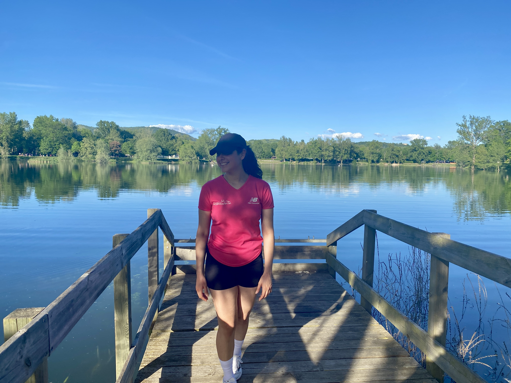

What do I do in my free time?
Fitness
Exercising is an essential part of my life; it not only boosts my self-esteem but also helps me stay centered. This commitment to physical fitness instills discipline and motivation within me, inspiring continual self-improvement and daily challenges.
- Swimming
-
I've competed in open water swimming competitions back in Mexico, including events in Chiapas, Acapulco, and Tequesquitengo Lake. These experiences have not only improved my physical capabilities but also my mental toughness and strategic thinking in the water.
- Strength Training
-
My gym sessions are focused on both strength training and conditioning. I follow a balanced workout schedule that enhances my physical fitness and overall health.
- Running
-
I usually run 3-4 times a week. I am currently training for a half-marathon race, focusing on building my endurance and speed. This challenging goal keeps me motivated and pushes me to enhance my running skills each day.

Volunteering
I have volunteered in meaningful capacities around the world, including as an English to Spanish translator for the Tzu Chi Foundation, helping deliver medical aid to impoverished communities. Additionally, while in France, I supported MDSE Auvergne in their efforts to assist students affected by various crises, participating in the distribution of essentials and helping to reconnect the student community.
Creativity
Creativity is a really important part of my life. It started with photography; I enjoy taking pictures of nature, my travels, and my loved ones.
You can look my photo portfolio here :)
Later, my creativity led me to enjoy creating designs on Canva, and eventually, I started to draw and paint.
Since 2020, I have devoted time to painting and drawing. Although I am not an expert, these creative activities represent much more than just means of expression; they are also opportunities to explore and develop my creativity. Painting provides me a space where I can experiment and continually sharpen my artistic skills.
Traveling
I deeply enjoy traveling and encountering different cultures; it genuinely amazes me. Traveling not only allows me to discover new places and meet new people, but it also gives me a valuable opportunity for self-discovery.
I have had the chance to travel to the following countries:
- Mexico
- Canada
- United States of America
- Belgium
- The Netherlands
- France
- Italy
- Spain